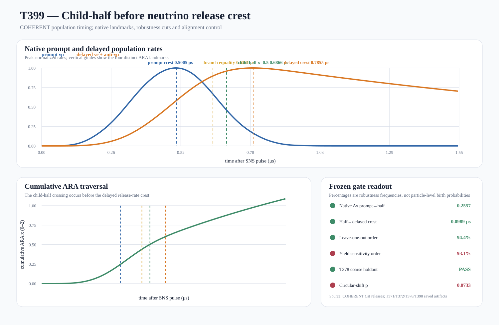

Result
CHILD-HALF PRE-CREST SEQUENCE NOT SUPPORTED
The native sequence is prompt crest → branch equality → child half → delayed crest. Child half occurs 0.098851 μs before the delayed-rate maximum. The earlier prompt crest is 0.255731 ARA units below child half.
This is a joint population timing result. It does not directly observe one muon producing one named pair of neutrinos.
Frozen gates
| Gate | Status |
|---|---|
| G1_native_four_landmark_order | PASS |
| G2_native_child_half_before_delayed_crest | PASS |
| G3_native_quarter_compatibility | PASS |
| G4_leave_one_out_half_before_crest_at_least_90pct | PASS |
| G5_yield_sensitivity_half_before_crest_at_least_95pct | FAIL |
| G6_T378_coarse_holdout_half_before_delayed_peak | PASS |
| G7_circular_shift_alignment_p_at_most_0p05 | FAIL |
| G8_population_not_individual_birth_boundary | PASS |
Reproduction
Run python analysis/muon/t399_child_half_precrest_sequence.py, then python analysis/muon/validate_t399_child_half_precrest_sequence.py.